Sumilon Island: By tricycle to the jetty, then a few minutes across by boat. The reef off Sumilon was declared the Philippines' first marine sanctuary in 1974. The island is small and wooded, with a sandbar that shifts with the tides. A cave bears the name of the Japanese general Yamashita – legend has it that part of the gold he hid during the Second World War lies here.
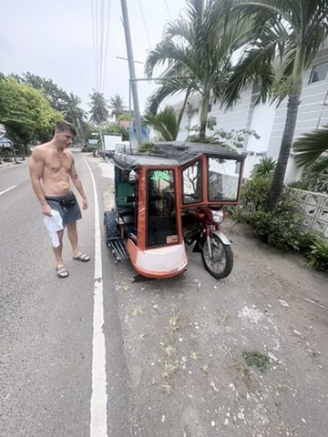
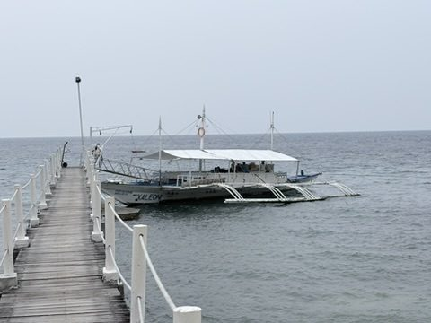
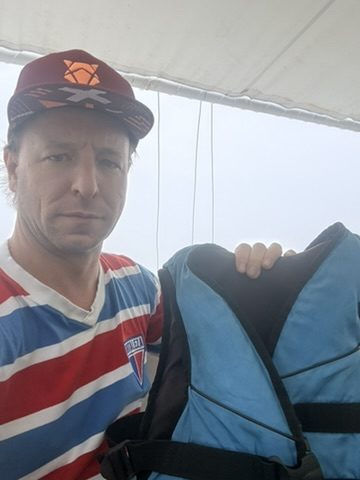
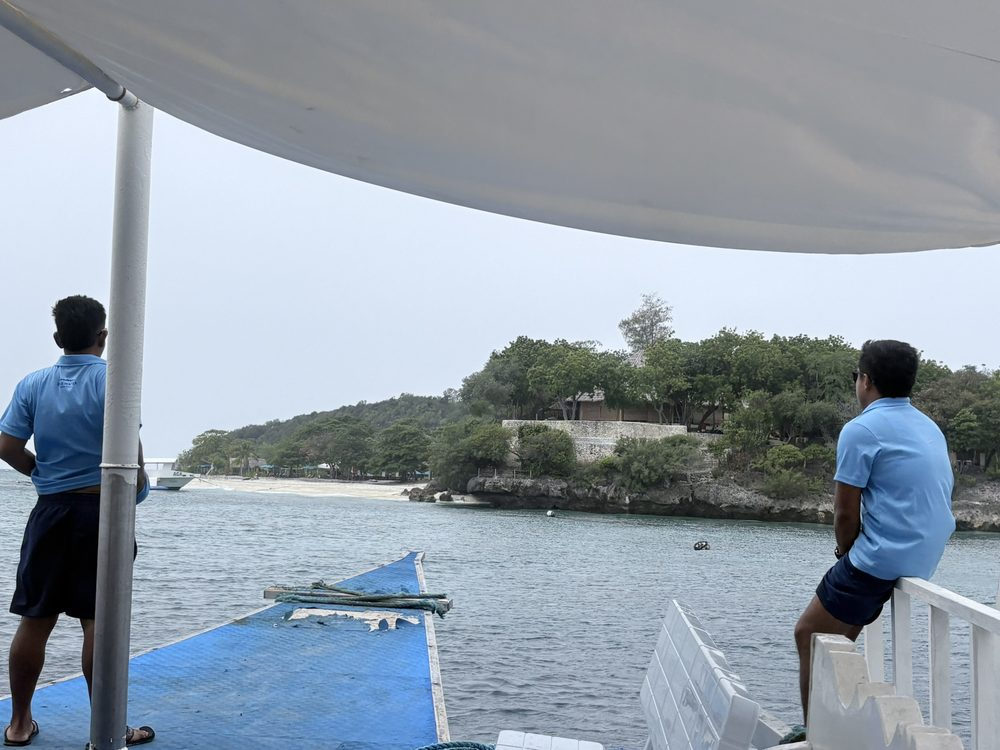
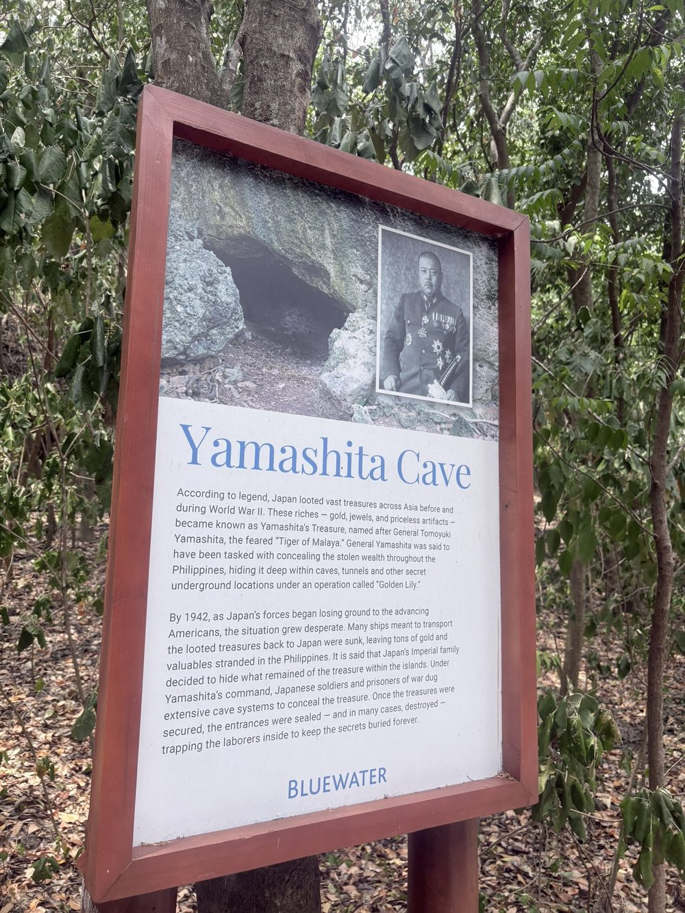
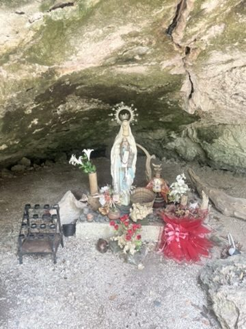
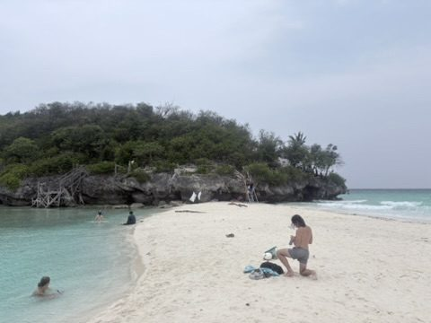
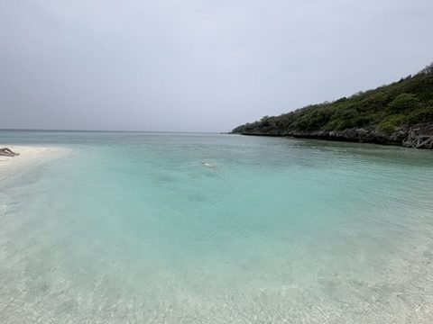
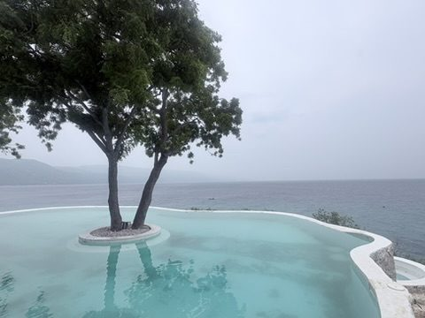
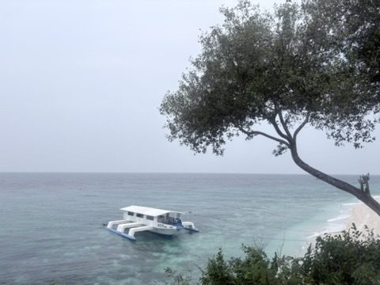
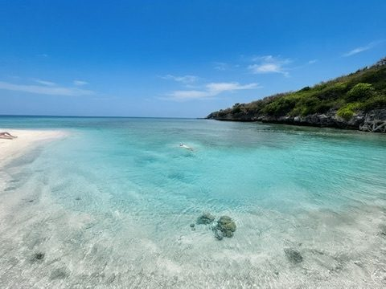
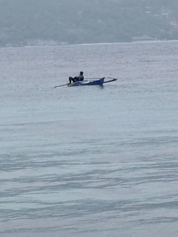
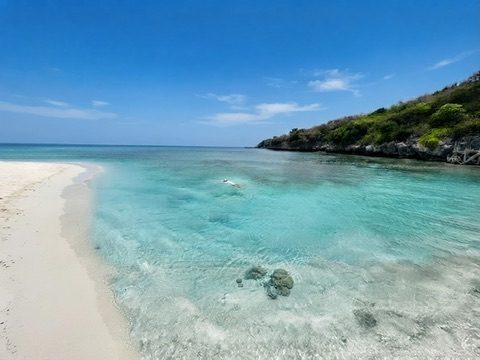
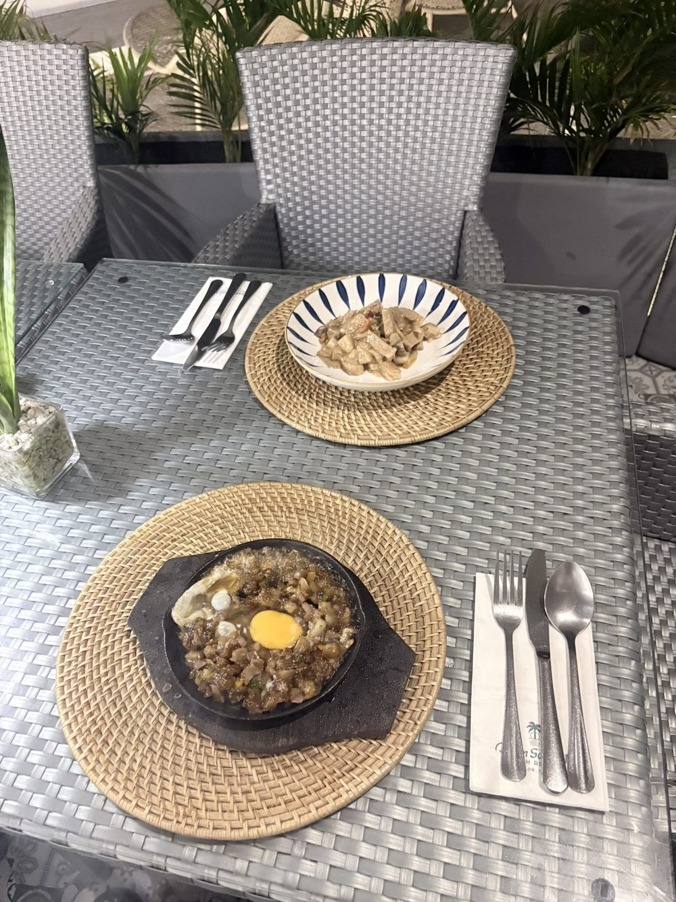